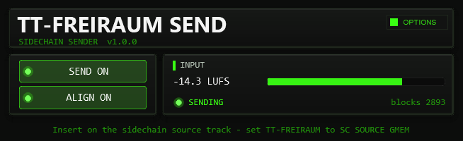
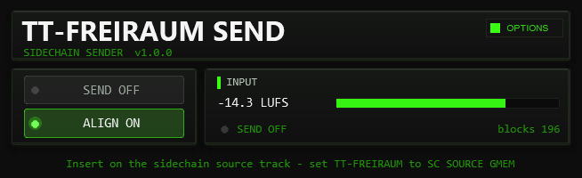
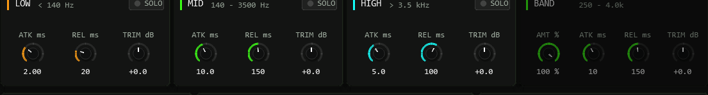
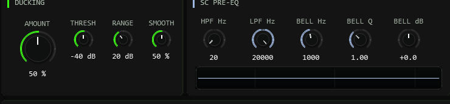
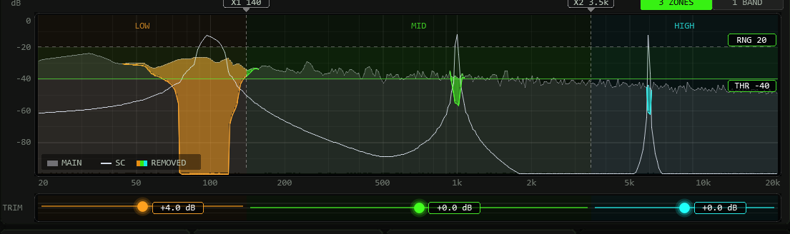
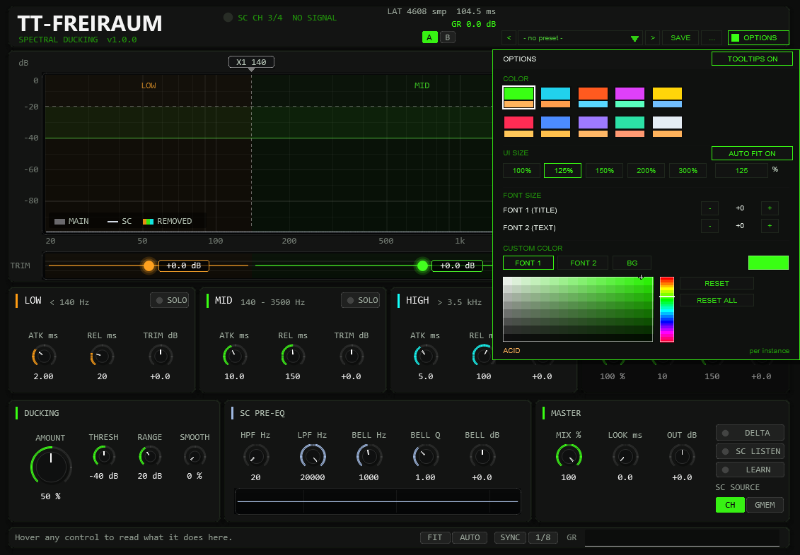
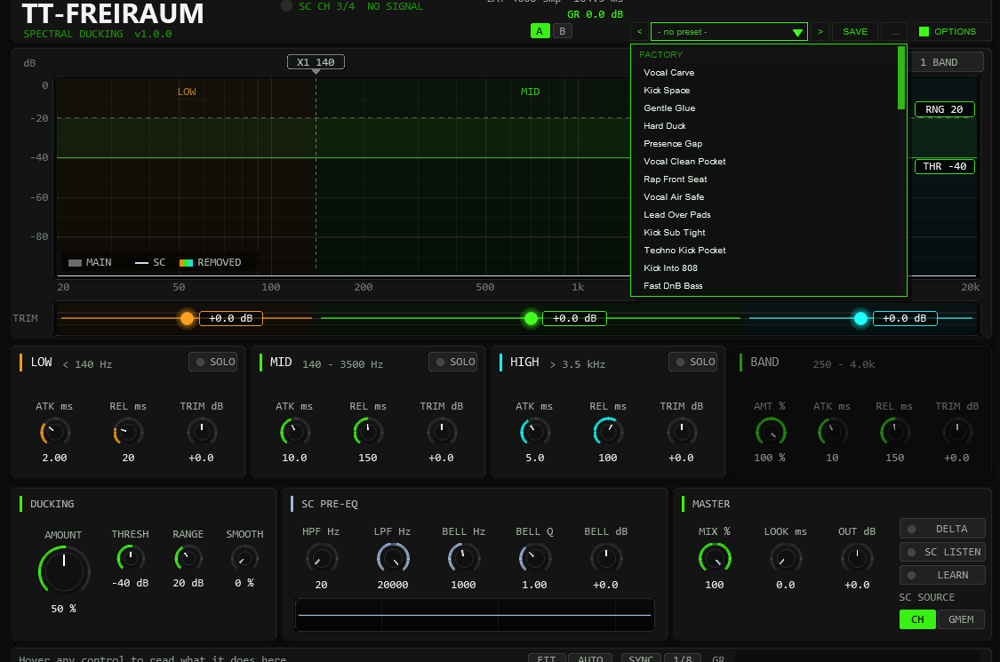
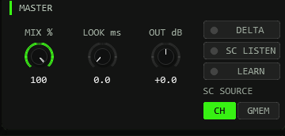
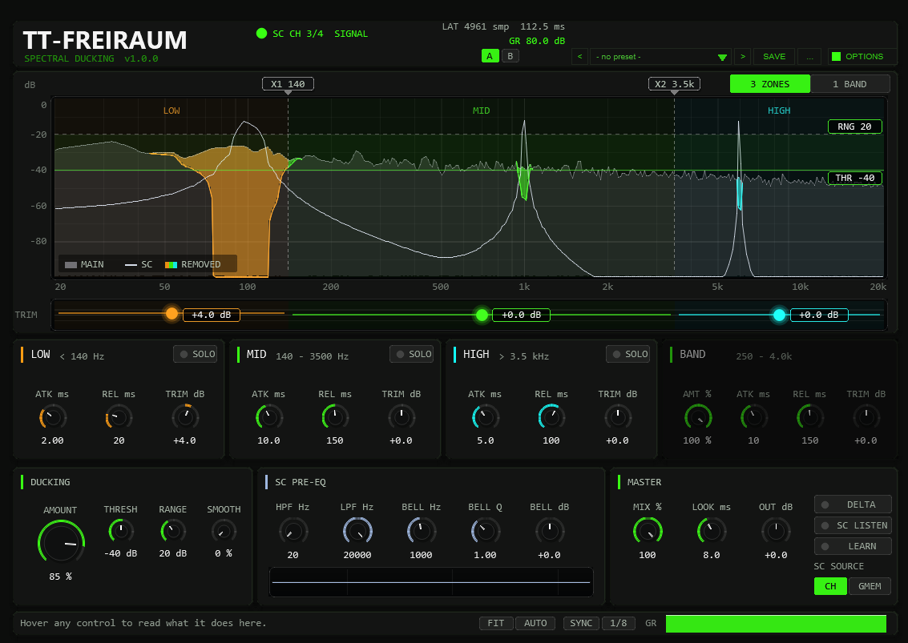
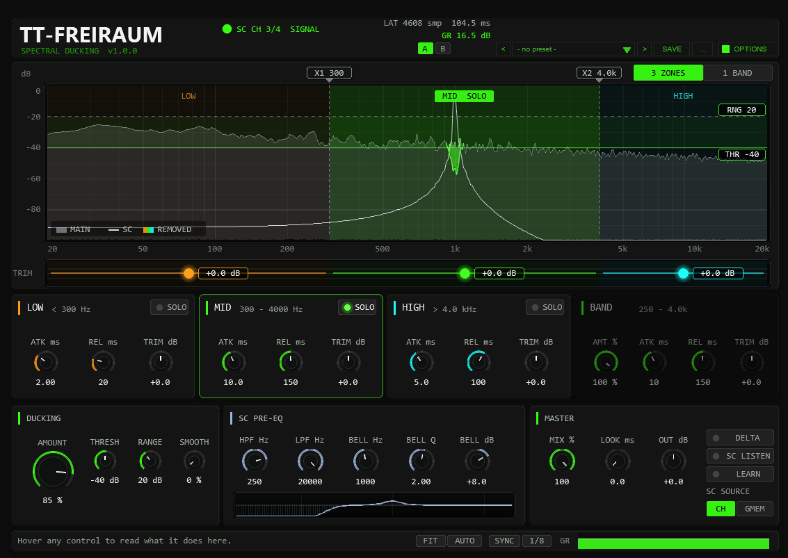

01The concept
A broadband ducker turns the volume down when the sidechain hits — the whole signal, including the parts that do not conflict. TT-FREIRAUM works spectrally: it analyses the sidechain every 10.7 ms (512-sample hop at 48 kHz, 11.6 ms at 44.1 kHz) and removes energy from the main signal only at the frequencies the sidechain actually occupies.
main out = main in − Σ ( zone activity(t) × removed zone spectrum )The removed energy is reconstructed per zone through its own overlap-add path and scaled by a per-sample time-domain activity — a hybrid of spectral weights (updated per hop) and analogue-style envelopes (updated per sample). A kick ducking a bass removes only the kick's bins; the bass's own harmonics in between keep playing. And because the removed part exists as a real signal, DELTA audition and ZONE SOLO come free, without phase errors.
02Quick start
- Insert
TT-FREIRAUMon the track that should make room (e.g. pads, guitars, a busy bus). The preset bar in the header offers factory starting points. - Feed the sidechain over channels 3/4 — the recommended and
better path: add a send from the competing track to this track with
destination channels 3/4, and set this track to 4 channels.
SC SOURCE stays on
CH. (The alternative without a send — SC SOURCEGMEMplusTT-FREIRAUM SENDon the source track — is described in section 03.) - Watch the header LED: it must read
SC CH 3/4 SIGNAL(on the link:SC GMEM LINK OK). Then raise AMOUNT — the display shows the main spectrum, the sidechain spectrum and the live cut curve. - Press DELTA to hear exactly what is being removed, and trim the three zones to taste.
03Sidechain routing
The plug-in exposes four input pins — Main L/R on 1/2, SC L/R on 3/4 — and two ways to fill the sidechain pair. Channels 3/4 is the recommended one; the GMEM link is the alternative for cases where a send is not practical:
| SC SOURCE | Path | Use case / cost |
|---|---|---|
CH (default, recommended) | Sample-synchronous pins 3/4 of the plug-in. Send the source to channels 3/4 and set the receiving track to 4 channels. | Standard send routing on one track/bus; lowest latency (4608 + LOOKAHEAD only) |
GMEM | Shared ring buffer in the ttab gmem namespace, written by TT-FREIRAUM SEND on the source track | Ducking across tracks and busses without rewiring — e.g. sidechain straight from a subgroup or FX return. Costs latency: a fixed 2048-sample guard on this track, and 12288 samples on the source track while ALIGN is on in the sender (needed for on-time ducking during playback, see below). REAPER compensates both |
ALIGN on in the sender, which adds 12288 samples of latency to the source track, and it relies on both plug-ins getting the project time from REAPER (details in the box below). All examples in this manual therefore use channels 3/4.TT-FREIRAUM SEND: the sender of the GMEM link
TT-FREIRAUM SEND is part of TT-FREIRAUM, not a separate product: it installs with it, carries the same
version number and appears in the FX browser as a second entry. It has two switches. SEND streams the track's audio into the link.
ALIGN (on by default) makes the sender report 12288 samples of latency: the audio passes through unchanged, delayed by exactly
that amount, and REAPER compensates it like any plug-in latency. The panel shows the
K-weighted input level, the link status (SENDING or SEND OFF) and a block counter as proof of life.
COLLISION appears when a second sender writes to the same link: the receiver then gets mixed audio, so keep one
sender per project switched on.

SEND ON and ALIGN ON switches, the K-weighted input level in LUFS, the status SENDING and the running block counter.
SEND OFF nothing is written and the link is released; TT-FREIRAUM stops ducking (less than 1 dB left in the test render). The audio on the sender's own track keeps passing through unchanged, and the level display keeps running.Why ALIGN. During playback REAPER plays a track early by the latency its plug-ins report. FREIRAUM reports
6656 samples in GMEM mode (plus LOOK), so its track runs ahead of a sender track without latency, and the
sidechain audio it needs has not been played yet. The ducking then comes late by FREIRAUM's latency minus 2048 samples plus one audio
block: measured 4736 samples = 107 ms at 44.1 kHz with 128-sample blocks and LOOK 0. With ALIGN on,
the sender's track runs ahead as well, and the ring always holds what FREIRAUM needs; 12288 samples cover every LOOK
setting and audio blocks up to 4096 samples. Switch ALIGN off only for a track you play or monitor live: it then has no
latency, the ducking arrives late while you listen, and offline renders still match channels 3/4.
For GMEM mode the sender must be switched on (SEND ON) — the link carries the
unprocessed audio itself, not just a level. Internally FREIRAUM then delays
the main signal by 2048 samples before analysis, because the sender may run
before or after it inside the same audio block. While the transport runs, both plug-ins stamp the
project time of each block, and FREIRAUM takes the offset between the two tracks from it; with the
transport stopped it falls back to the measured counter difference. It never reads beyond what the
sender has confirmed as written (with ALIGN off that is why the ducking is late during playback). If the sender stops
updating for ~250 ms (bypassed, track offline), the link is declared stale
and the plug-in falls back to silence on the sidechain: no ducking, clean
passthrough. Until then it never reads ring data the sender has not written
yet — such samples count as silence, so a stopped sender cannot replay
seconds-old sidechain audio. With several senders running, the last writer wins.
ALIGN on and off, also with a plug-in that reports latency in front of the sender or of FREIRAUM) the output over the link was bit-identical to the render over CH 3/4: ducking from the first block on, no dropouts, the same timing. Up to v1.7.4 the link could stay silent for 0.1 to 2.4 s after the start, drop out for single stretches later (100 ms windows down to 1.3 to 3.1 dB of about 5.4 dB) and duck about 58 ms early; the cause was the way the offset between the two tracks was estimated.Playback. With
ALIGN on in the sender, the recorded output of playback over the link was identical to playback over CH 3/4: from the first sample after the start, across loop boundaries and after a seek during playback, in either track order. The sender's own audio came out bit-identical, delayed by 12288 samples. With ALIGN off the ducking arrived 4736 samples = 107 ms late (measured on the audio; 44.1 kHz, 128-sample blocks, LOOK 0), so a transient duck then sounds different during mixing than in the render.Limits. The playback figures come from one system (ASIO, 44.1 kHz, 128-sample blocks); other device block sizes and other buffering settings of REAPER were not measured. While the transport is stopped the plug-ins get no project time, and the link falls back to an estimate from the block counters: good enough to audition, not sample-exact. One sender per project.
CH 3/4 (the default, see the box above) needs none of this: it is sample-synchronous by design and has no guard delay.SC CH 3/4 SIGNAL / SC CH 3/4 NO SIGNAL, or
SC GMEM LINK OK / NO SENDER (GMEM). Without a valid
source the plug-in stays idle — nothing is ducked, the main signal passes
unchanged (still delayed, because PDC is constant).04Zones & ballistics
The spectrum is divided into three zones by two crossover frequencies. The zone masks are complementary smooth-step crossfades in log-frequency, ±1/4 octave wide around each crossover, and sum to exactly 1 — the three zones partition the spectrum with no gaps and no overlap.
Since 0.9.0 the header of the spectral card has 3 ZONES / 1 BAND.
1 BAND ducks only between two handles, LO and HI (defaults 250 Hz and 4 kHz, at least half an octave apart), with its own amount, attack, release and trim on the BAND card. Outside that range nothing is removed. The three zone cards stay visible and editable, and do not affect the sound in this mode. 3 ZONES is the default; settings inside the old trim range sound the same as before.
| Zone | Attack | Release | Trim |
|---|---|---|---|
LOW — below XOVER LOW (40–500 Hz, def. 140) | 0.5–50 ms (def. 2) | 10–250 ms (def. 20) | −24 to +24 dB each: scales how much of the detected removal this zone applies. Above +12 dB a quieter sidechain can still reach full removal, as long as it rises above THRESH (trim scales the removal, it does not lift the sidechain over the threshold). The cut never exceeds the whole zone |
MID — between the crossovers (XOVER HIGH 1–12 kHz, def. 3500) | 2–100 ms (def. 10) | 50–500 ms (def. 150) | |
HIGH — above XOVER HIGH | 1–80 ms (def. 5) | 20–300 ms (def. 100) |
XOVER HIGH is constrained to at least twice
XOVER LOW — raise the low crossover and the high one moves with
it if needed.
Each zone has its own detector on the sidechain: the (pre-EQ'd, mono)
sidechain is split by 4th-order Linkwitz-Riley-style band filters at the
crossovers, followed by a fast peak envelope, a gate at THRESH
with a 3 dB knee, and independent attack/release ballistics — computed
per sample, so an attack can land well inside the 10.7 ms analysis hop
(measured: 90 % after 2.9 ms on the LOW zone at its default ATK of 2 ms). The times are
99 % settling constants. Between hops the zone's spectral removal decays at
its release rate instead of snapping back at frame boundaries.
Typical setting: fast low zone (kick vs. sub-bass, no phase smearing), a musical mid zone (vocal vs. guitars), a controlled high zone (hi-hat vs. snare crispness).

05Spectral engine
The engine runs a 4096-sample sqrt-Hann window on a 512-sample hop (8× overlap-add, constant-overlap-add sum 4). The sidechain is analysed with a 4096-point real FFT, which gives 2049 bins ≈ 11.7 Hz apart at 48 kHz; DC and Nyquist are never ducked. The main signal is zero-padded to an 8192-point transform, so the removal acts as a linear filter and its tails cannot wrap around inside the frame; the cut curve is interpolated onto the 5.9 Hz intermediate bins.
Two changes in v1.1.0 over v1.0.0: the hop is half as long (v1.0.0: 1024 samples, 4×), and the main-signal transform is truly zero-padded (v1.0.0 filtered circularly within 4096 samples). Measured with a sidechain tone that the main signal shares, at AMOUNT 100: the residue of a 400 Hz→2.8 kHz sweep drops from −55.4 to −64.2 dB, the residue of a 1 kHz vocal-style vibrato (±100 Hz, 6 Hz) from −46.7 to −51.2 dB. The energy of the removal's impulse response beyond 30 ms falls from −44.1 to −50.5 dB, removal away from the notch from −98 to −104 dB. Steady-state depth, attack/release, latency and the DELTA null are unchanged. The price is ~3.5 % of one core more.
Since v1.5.0 the work of one hop (sidechain analysis, weights, two main transforms, up to three zone syntheses per channel) is spread over 13 steps 36 samples apart instead of landing in a single sample, so a small audio buffer at high sample rates no longer sees a spike every 512 samples. The price is 512 samples of extra latency (section 11); the sound is unchanged. The same zero-padded transform now lives in the shared STFT core and is also used by other plug-ins of the suite.
Per hop, the sidechain magnitudes are converted to dB against a sine-peak
calibration, mapped through THRESH/RANGE to a 0–1
weight, dilated by ±2 bins — a 4096-sample window cannot carve a notch
narrower than roughly five bins, and without dilation a pure tone only
reaches ~4.7 dB instead of the full 6.0 dB — and smoothed with a 1-2-1
kernel against comb artefacts and "watery" sound. The removal gain per bin
and zone is min(1, AMOUNT × weight × trim) × zone mask; each
zone's removed spectrum is synthesised into its own OLA ring, and the output
subtracts the activity-weighted sum from the (latency-matched) dry signal.
| Control | Range | Function |
|---|---|---|
AMOUNT | 0–100 %, def. 50 | Global removal depth; 100 % = full bin suppression wherever the sidechain is over threshold |
THRESH | −80…0 dB, def. −40 | Sidechain level below which bins count as silent — also the gate of the zone activity detectors |
RANGE | 3–48 dB, def. 20 | dB window above THRESH that maps to full weight; smaller = harder, more binary carving |
SMOOTH | 0–100 %, def. 0 (off) | Rounds the corners of the zone activity envelopes, so very fast attacks (e.g. 0.5 ms LOW ATK) no longer click at kick onsets. Global, not part of a preset; at 0 % the output is bit-identical to a build without it |
06SC pre-EQ & gate
The SC PRE-EQ shapes the sidechain in the time domain, before both consumers — the spectral analysis and the zone detectors hear exactly the same filtered signal. One truth, no disagreement between "what is removed" and "when".
| Stage | Range / default | Typical use |
|---|---|---|
HPF 4th-order | 20–500 Hz, def. 20 Hz (off at the minimum) | Remove sub rumble so the ducker follows the real kick |
LPF 4th-order | 1–20 kHz, def. 20 kHz (off at the maximum) | Ignore hiss/cymbal bleed on the sidechain |
BELL FREQ/Q/GAIN | 100 Hz–16 kHz · 0.3–10 · ±18 dB, def. 0 dB (off) | Surgically notch out a bleed frequency (e.g. hi-hat on the snare send) or emphasise the band that should drive the duck |
THRESH does double duty: it sets the bin level below which the
spectrum counts as silent and the gate threshold of all three zone
detectors (with a 3 dB knee). If a zone never opens even though the
spectrum shows energy, THRESH is the first knob to lower.

07Controls & display
All sliders stay hidden by design — the drawn front panel (900×622) is the interface. Knobs: drag vertically, Shift for fine steps, mouse wheel over a knob, Ctrl-click, right-click or double-click for the default.
| Control | Values | Function |
|---|---|---|
SC SOURCE CH / GMEM buttons | CH 3/4 · GMEM LINK | Sidechain input path (section 03) |
AMOUNT | 0–100 %, def. 50 | Removal depth |
THRESH / RANGE | −80…0 / 3–48 dB | Spectral gate shaping (section 06) — also the THR and RNG markers on the right edge of the display (drag up/down, right-click = default) |
XOVER LOW / HIGH | 40–500 / 1k–12k Hz | Zone boundaries — also draggable as lines or as the X1/X2 tabs above the display; HIGH ≥ 2× LOW |
LOW/MID/HIGH ATK · REL · TRIM | see zone table | Per-zone ballistics and removal scaling; TRIM is also on the strip under the display |
PRE HPF / LPF / BELL FREQ·Q·dB | see pre-EQ table | Sidechain conditioning |
LOOK (LOOKAHEAD) | 0–20 ms, def. 0 | Delays the main signal so ducking starts before the transient (section 10). The value below the knob shows the effective lookahead; at 192 kHz the ring limits it to 18.7 ms. |
MIX | 0–100 %, def. 100 | Parallel blend: scales the removed energy only — phase-aligned, no comb |
OUT | ±12 dB, def. 0 | Make-up gain after the process |
DELTA / SC LISTEN / LEARN | toggle buttons | Audition modes and snapshot (sections 08/09). DELTA and SC LISTEN: a short click latches, a long press (over 0.35 s) is heard only while you hold it |
A / B (header) | two slots | Compare two settings: clicking the other letter keeps the current setting in its slot and loads the other one; an empty slot starts as a copy. The slots hold the preset values plus SC SOURCE, MIX, SMOOTH and SYNC, and last until the project is closed |
SYNC + note value (bottom line) | OFF/ON · 1/32, 1/16, 1/8, 1/4 (def. 1/8) | All release times follow the project tempo: one note value for the three zones and the band, each kept inside its own release range (LOW 10–250, MID 50–500, HIGH 20–300, BAND 50–500 ms). Works with the window closed. Turning a release knob by hand switches SYNC off |
FIT (bottom line, 1 BAND mode) | button | Listens to the sidechain for 1.5 s while it plays and sets the band edges around its energy (5–95 % of the energy within 30 dB of the peak, plus 1/6 octave) |
AUTO (bottom line) | button | Listens to the sidechain for 1.5 s and sets THRESH 8 dB below its peak (in 1 BAND mode inside the band). If the peak is only just above −80 dB, THRESH goes to −80 and the band trim (SENS) or the three zone trims rise by the missing distance. FIT and AUTO need the window open and the sidechain playing; otherwise the line reports PLAY THE SIDECHAIN |
GR strip (bottom line) | 0–24 dB | Reduction history of the last 3.3 s (strongest cut in any bin, after MIX), the line marks the recent peak |
SOLO per zone | OFF/LOW/MID/HIGH | Solos one zone's band (section 08) |
The spectral plot (log scale, 20 Hz–20 kHz) shows the main spectrum in
grey and the sidechain as a white line. What the ducking removes from the main signal right now is
filled in the colour of the zone it falls in: the area between the main curve and the curve
after ducking, drawn as a bright line. The shaded THRESH line plus the
RANGE band above it show where the sidechain starts to bite; the THR and
RNG markers at the right edge move them directly (THR below the line, RNG above the band;
right-click = default). The two crossovers are dashed lines with X1/X2 tabs above
the plot; drag the tab or the line. Zone names sit in the plot (a soloed zone shows as a pill). Below the plot, the TRIM lane holds
a draggable node per zone (±12 dB) with a value tag. The header shows live
LAT … smp / … ms and GR … dB, the strongest
per-bin reduction right now (after MIX). The grey MAIN curve shows the louder of the left and right channel. The header texts are placed by their measured
width: with a large FONT SIZE or a small window the status moves
behind the wordmark, and if space still runs out the latency drops its
sample count, then the status word (the LED keeps showing the state), then the
LAT line — GR always stays.
The hint line at the bottom of the front explains the control under the mouse in one sentence
(independent of the tooltip switch in OPTIONS) and shows the messages of FIT and AUTO.

Options / Color
The OPTIONS button at the right end of the header opens a box
with three groups. COLOR offers ten colour schemes for the whole
front: ACID (the factory colour, a neon green), CYAN, ORANGE, MAGENTA,
YELLOW, RED, BLUE, VIOLET, MINT and ICE — click a swatch to switch the accent,
its second colour and, for RED to ICE, the tinted panel background at once.
FONT SIZE scales the title font (FONT 1) and the text
font (FONT 2) in steps from −4 to +8 (the front of TT-FREIRAUM has fixed text boxes: its
texts grow up to +2 and keep that size above, so nothing overlaps; the OPTIONS box keeps scaling). CUSTOM COLOR
gives each of FONT 1, FONT 2 and the background
(BG) its own HSV picker — a combination with too little contrast
is flagged with a warning; RESET/RESET ALL revert one
target or everything. A click anywhere outside the box closes it. All of this
applies per plug-in instance, is stored with the project, the FX chain and
REAPER presets, and does not touch any audio parameter. The factory colour is
ACID, and the trace colours of the spectral display (MAIN grey, SC white; the three zone colours are derived from the scheme accent) keep their meaning in every scheme.
Tooltips. Every control has a tooltip: rest the mouse on a knob, toggle,
crossover or trim handle, the preset bar, OPTIONS or a header
readout and a one-line explanation appears after a short moment (not while you
drag). OPTIONS > TOOLTIPS ON / OFF, the switch in the title row
of the box, turns them off for this instance; the setting is stored with the
project, like the other style options.

08Presets

OPTIONS: < name > SAVE .... The name opens the list with the FACTORY and USER sections — 21 factory presets and 32 user slots; scroll to reach the remaining entries.The bar loads and saves the whole sound setting of the instance in one step (28 values since 0.9.0; older slots keep their 21 values and the band controls come up at their defaults): AMOUNT, the three zone TRIMs, both crossovers, attack and release of all three zones, the band mode with its edges, amount, trim, attack and release,
the SC pre-EQ (HPF, LPF, the bell), LOOK, OUT, THRESH and RANGE. Not part of a preset: SC SOURCE (it describes your routing, not the sound), SMOOTH (a global click guard),
MIX, the audition modes (DELTA / SC LISTEN), the zone SOLO, LEARN together with its snapshot (a measurement of your sidechain; since v1.5.0 saved with the project, but not in a preset slot),
the colour scheme (OPTIONS) and the hidden test parameters. Loading a preset therefore never switches your routing, your wet/dry balance or an audition. Note that LOOK is part of a preset:
a preset with lookahead changes the reported latency (REAPER re-aligns it automatically).
| Control | Function |
|---|---|
< / > | Previous / next preset: first the 21 factory presets, then the used user slots; wraps around and loads immediately. |
| Name field | Opens the list: FACTORY (21 presets) and USER (32 slots, empty ones show - empty -). Mouse wheel scrolls, click loads. A * behind the name means a value differs from the loaded preset. |
SAVE | Saves the current setting into the selected user slot; with a factory preset (or none) selected, into the first free slot. A name box opens (up to 24 characters, default User 01): type, Enter or OK saves, CANCEL or a click outside cancels. |
... | RENAME, COPY (into the next free slot), DELETE (a second click confirms) for the selected user preset, and INIT (all 21 values back to the factory defaults: AMOUNT 50 %, trims 0 dB, crossovers 140 Hz / 3.5 kHz, attack/release 2/20, 10/150 and 5/100 ms, HPF 20 Hz, LPF 20 kHz, bell 1 kHz / Q 1 / 0 dB, LOOK 0 ms, OUT 0 dB, THRESH −40 dB, RANGE 20 dB). |
Original factory presets
Starting points, not final settings. The original five presets were measured with a pink-noise main signal (−18 dBFS) and a steady sine as sidechain (−6 dBFS), 3 s after the start, MIX 100 %, offline render. The table shows the level change of the main signal in a narrow band around the sidechain tone (±6 % for 1 kHz, ±10 % for 100 Hz), against the same setting with AMOUNT 0. In every case the level 250 Hz, 2.5 kHz and 6 kHz away from the tone stayed within ±0.01 dB.
| Preset | Idea | SC = 1 kHz | SC = 100 Hz |
|---|---|---|---|
| Vocal Carve | Sidechain = lead vocal: makes room in the mids. AMOUNT 60 %, mid trim −1 dB, SC filtered 80 Hz–12 kHz, bell at 2.5 kHz, RANGE 14 dB. | −4.2 dB | −7.9 dB |
| Kick Space | Sidechain = kick: bass and low mids duck fast (low attack 1 ms, release 80 ms), AMOUNT 75 %, low crossover 120 Hz, SC low-passed at 8 kHz. | −4.9 dB | −12.0 dB |
| Gentle Glue | Slow, shallow ducking for a bus: AMOUNT 30 %, RANGE 8 dB, long attacks (12–25 ms) and releases (up to 380 ms). | −2.7 dB | −3.1 dB |
| Hard Duck | Deep and fast: AMOUNT 100 %, RANGE 30 dB, attacks 0.5–3 ms, 5 ms lookahead (reported latency 4608 → 4829 samples at 44.1 kHz). | −5.3 dB | −52.3 dB |
| Presence Gap | Sidechain = lead: keeps the 3 kHz presence area free (crossovers 180 Hz / 5 kHz, bell at 3 kHz in the sidechain, SC filtered 150 Hz–16 kHz). | −4.5 dB | −6.9 dB |
The depth depends on the zone: a narrow sine in the sidechain is a small band, so the average over the measuring band is much smaller than the notch itself; with full-range sidechain material the carved gaps are wider.
A factory preset changes exactly the 21 values above; SC SOURCE, MIX, audition, solo, LEARN and the colour stay as they are.
Where to hear what a preset does
Three short routings to test by ear. Match the level before you judge: with the plug-in on and off the loudness should be equal (use OUT or the track fader), otherwise you are comparing loudness, not space. Use DELTA to hear only what is removed.
- Kick and bass — preset Kick Sub Tight on the bass track, kick on channels 3/4. Listen for the bass stepping back in the low band with every kick while the kick keeps its click; between the kicks the bass is back at full level.
DELTAshould sound like short low pulses on the kick grid and silence in between. - Vocal and pad — preset Vocal Clean Pocket on the pad bus, lead vocal on channels 3/4. Listen for the pad opening a pocket in the mids when a syllable arrives and blooming back afterwards, with low end and air left alone.
SC LISTENshows what the detector hears. - Hall return — preset Reverb Vocal Duck behind the reverb, the dry vocal as sidechain. Listen for the tail stepping back while the word is sung and returning smoothly in the pause (MID release 350 ms).
These are descriptions of the intended behaviour. Audio examples are not embedded in this manual.
ATK to 2–3 ms and set LOOK to the same value.New factory presets (1.6.0)
Sixteen additional starting points for modern productions. Put FREIRAUM on the signal that should make room, and feed the important signal into its sidechain. These recipes are level-dependent: adjust THRESH while the sidechain plays, then tune AMOUNT in the mix. The measurements above describe the original five presets only.
For the intended starting behaviour, set MIX to 100%, AUDITION to NORM, ZONE SOLO to OFF and LEARN to OFF yourself. These switches and SC SOURCE are deliberately not loaded by a sound preset. All new presets use OUT = 0 dB. Negative TRIM reduces the removal contribution, without completely disabling a zone; SC pre-EQ shapes detection only. RANGE sets the level span above THRESH over which the spectral weight rises to full strength, not a maximum cut in dB. Release times are not tempo-synced. LOOK adds latency compensated by REAPER.
| Preset | FREIRAUM on | Sidechain | Intent |
|---|---|---|---|
| Vocal Clean Pocket | Instrumental / pad bus | Lead vocal | Moderate midrange space; reduced low/high trims protect bass and air. |
| Rap Front Seat | Beat / instrumental bus | Rap vocal | Fast midrange response with a 2.4 kHz detector emphasis. |
| Vocal Air Safe | Bright pads / strings / guitars | Lead vocal | Midrange space with a 6.5 kHz SC low-pass and strongly reduced high-zone removal. |
| Lead Over Pads | Pad / chord bus | Melodic lead synth | Sustained midrange clearance with a 240 ms mid release. |
| Kick Sub Tight | Sub / bass track | Short kick | Fast low-zone clearance; 3 ms low attack with 3 ms lookahead, 55 ms low release and a 1 kHz SC low-pass. |
| Techno Kick Pocket | Bass / rumble / low synth bus | Kick | Longer low-zone clearance for kick body and tail; 135 ms low release. |
| Kick Into 808 | 808 / deep bass track | Kick | Focused low-end space below 110 Hz; neutral detector bell. |
| Fast DnB Bass | Fast bass bus | Kick | Short low/mid releases for dense breakbeats; 45 / 70 ms. |
| Snare Body Space | Synth / guitar / music bus | Snare / clap | Midrange transient space; 160 Hz SC high-pass and 1.5 kHz bell. |
| Hats Air Slot | Bright synth / noise / FX bus | Hi-hats / shaker | High-zone clearance above 6.5 kHz; 1 ms attack / 40 ms release. |
| Acid Lead Pocket | Chord / pad / competing synth bus | Acid / resonant lead | Wide mid-zone space up to 6 kHz with a 3.2 kHz detector emphasis. |
| Reece Mid Space | Reece / mid-bass layer | Lead / vocal | Midrange room with reduced sub/high-zone removal; 200 ms mid release. |
| Pluck Through Pad | Pad / chord bus | Pluck / arp / short keys | Fast onset clearance with 4 ms lookahead and 160 ms mid release. |
| Reverb Vocal Duck | Reverb return, after reverb | Dry lead vocal | Phrase clearance in the reverb return; 350 ms mid release. |
| Delay Lead Duck | Delay return, after delay | Dry vocal / lead | Keeps repeats behind new phrases; 280 ms mid release, not tempo synced. |
| Bus Gentle Space | Music / background bus | Vocal / important lead | Shallow, slow clearance; 24% amount and 32 / 420 ms mid ballistics. |
The accompanying MODERNE_PRESETS.md in the plug-in folder contains the complete parameter values and a German routing / adjustment guide. The original five presets keep their indices and settings; the 32 user slots and serialized sound layout are unchanged.
Where the user bank lives. Plug-ins cannot write files, so the 32 user slots are part of the plug-in state: they are saved with the project, with FX-chain and track-template copies,
and in every REAPER preset of this plug-in (the + button in the FX window toolbar). To take your bank to another project or computer, save a REAPER preset once
(+ → Save preset) and load it there: the whole bank comes with it. Projects saved with earlier versions load unchanged with an empty bank.
Typing names. REAPER keeps Space for the transport, so type Shift+Space for a blank. Depending on your REAPER settings Esc closes the whole FX window; use CANCEL instead. (The + menu of the FX window also has Send all keyboard input to plug-in.)
09Audition & solo
| Mode | What you hear |
|---|---|
NORM (default) | Main minus removed spectrum — the product output |
DELTA | Only the removed energy: exactly what the ducker takes away. Nothing else is touched — at AMOUNT 0 the delta floor sits below −300 dBFS |
SC LISTEN | The sidechain after the pre-EQ, delayed to the same output latency — literally what the detector hears |
ZONE SOLO is a separate selector (OFF/LOW/MID/HIGH, one
SOLO button per zone) that crossfades the output into a single
zone's band: with NORM you hear that band after
ducking — for judging whether a zone is being carved too hard; combined
with DELTA you hear only what that zone removes. Measured zone
isolation: −68 dB at 60 Hz and −120 dB at 9 kHz inside a MID solo.
All mode, solo and learn switches fade over ~20 ms — no clicks mid-track. Switching the solo straight from one zone to another fades the old zone out, waits until the new zone's band is fully built in the analysis (one window, ~85 ms at 48 kHz plus LOOKAHEAD — you hear the unsoloed output meanwhile) and then fades the new zone in.

10Learn snapshot
Press LEARN while the sidechain plays: the running average
of the sidechain spectrum (a ~200 ms window) is frozen into a static
removal profile. Over a 20 ms ramp the weights crossfade from the live
spectrum to the snapshot, and all three zone activities are pinned fully
open — the result is an EQ-carving profile that keeps working even when the
sidechain goes quiet, not a dynamic ducker. Release LEARN to
ramp back to live tracking.
Let the sidechain play for at least a fraction of a second before
pressing so the average is representative. A held profile survives
transport stops, play and render while the instance runs (since 1.4.4 —
earlier versions lost it at every transport start); after a sample-rate
change it is mapped onto the new frequency grid. Since v1.5.0 the profile
is saved with the project (and with FX-chain copies, track templates
and REAPER's own preset files) whenever LEARN is on: after a
reload it works right away, without the sidechain. Projects saved with
earlier versions carry no profile and behave as before (toggle LEARN again
with the sidechain playing). The profile is not part of the 32-slot preset
bar. The averaging window is about 200 ms at every sample rate (up to
v1.4.5 it shrank at high rates: ~100 ms at 96 kHz, ~50 ms at 192 kHz).
11Latency & lookahead
| Setting | Reported delay |
|---|---|
| Base (STFT window 4096 + spread hop work 512) | 4608 samples — 96 ms @48 k, 104.5 ms @44.1 k (up to v1.4.5: 4096) |
| + LOOKAHEAD 10 ms | 5088 samples @48 k · 5049 @44.1 k — reported exactly to REAPER's PDC |
| + LOOKAHEAD 20 ms | 5568 samples @48 k |
| GMEM LINK mode | +2048 samples guard for the sender/receiver block order |
TT-FREIRAUM SEND with ALIGN on | 12288 samples on the sender's own track — 256 ms @48 k, 279 ms @44.1 k (0 with ALIGN off) |
CH 3/4 and 6656 samples = about 139 ms over GMEM, each plus LOOK (up to +20 ms); a track with TT-FREIRAUM SEND and ALIGN on adds 12288 samples = 256 ms of its own. REAPER compensates this for playback and rendering, but it is audible when a performer monitors through the plug-in: put FREIRAUM on bus or return tracks, not on a live monitoring path, and leave it off while recording through it. The header shows the live value in samples and ms.LOOKAHEAD delays the main signal relative to the zone
activity — the duck is already down when the (delayed) transient arrives,
which kills the click at the onset (measured: onset leads by ~9–10 ms at
LOOKAHEAD 10). The full 20 ms are available up to 176.4 kHz; above that
the lookahead tops out at 3583 samples (≈18.7 ms @192 k; up to v1.4.5 the
limit was 1856 samples, i.e. ~19 ms @96 k and ~10 ms @192 k). The header
shows the live LAT samples / ms. The output lies exactly at
the reported delay (since 1.4.4; earlier versions were one sample early, so
a render of 1.4.4 sits one sample later than one of 1.4.3). Moving
LOOK shifts the latency, which REAPER re-aligns; the ducking
keeps working while you turn it.
12Hidden readouts
For diagnostics and test automation the plug-in publishes read-only
parameters — hidden from the panel (JSFX - prefix) but exposed
to the host, so they appear in REAPER's parameter/automation list:
| Parameter | Content |
|---|---|
Q PDC | Reported latency in samples — the same number the header shows as LAT |
Q SC STATE | 0 = no source · 1 = signal present on CH 3/4 · 2 = GMEM link alive (mirrors the header LED) |
Q ACT LOW / MID / HIGH | Live zone activity 0–1, after the gate and the attack/release ballistics |
Q GMAX | Strongest current per-bin removal 0–1 (the header shows it as GR in dB) |
Q HOPS | Analysis hop counter — keeps counting while the engine runs |
Q SC PEAK dB | Level of the loudest sidechain bin this hop, sine-calibrated dB |
Q PB CMD / Q PB IDX / Q PB A / Q PB B | Preset-bank test interface (sliders 37–40): command, slot or factory index, and two readouts. Only used by the test suite; leave at 0. Commands that write (save, load, factory, INIT) run only when a test script has set the suite's test key, so stray automation cannot touch the preset bank |
Q W MAX | Highest spectral weight 0–1 after THRESH/RANGE gating — did the sidechain open the gate at all? |
13In practice
Three setups cover most of what TT-FREIRAUM is for. Each names the routing, the settings that matter and what to watch in the display.
Kick → bass: the classic duck
Goal: every kick hit carves room in a sustained bass or pad — only where the kick actually lives, so the bass keeps its own mids and tops playing between hits.
- On the bass track: insert
TT-FREIRAUMand set the track channel count to 4. SC SOURCE stays onCH. - On the kick track: add a send to the bass track with
destination channels 3/4; the kick's own output stays as it is.
The header must read
SC CH 3/4 SIGNAL—NO SIGNALmeans the send is missing or lands on channels 1/2. - Raise AMOUNT to 50–80 %. Hold SC LISTEN and check
that only the kick reaches the detector — if the channel carries
rumble or cymbal bleed, raise
PRE HPFuntil the listen contains just the body and the click. - LOW zone:
ATK≈ 2 ms,REL20–60 ms — short enough to feel tight, long enough not to stutter. If the sub should dive deeper, reach for the zoneTRIMbefore pushing AMOUNT further.
DELTA that only the collisions come out.Without a send. If a send is not practical — the
source sits on a subgroup or an FX return, for example — insert
TT-FREIRAUM SEND first in the kick track's chain (it taps
whatever plays at that point), leave SEND and ALIGN on and set
SC SOURCE to GMEM on the bass track. The header must
then read SC GMEM LINK OK; NO SENDER (GMEM) means
the sender is bypassed, missing or switched off. This path adds a fixed
2048-sample guard on top of the 4608-sample base latency (the header
LAT shows the sum) and 12288 samples of latency on the kick
track; REAPER compensates both (section 03).

SC CH 3/4 SIGNAL, GR 80 dB at the notch floor, LAT 4961 smp ≈ 112.5 ms at 44.1 kHz (4608 base + 353 for 8 ms LOOKAHEAD; with the GMEM link another 2048 link-guard samples are added).Vocal unmasking: surgical carve on a bus
Goal: a dense bus (guitars, keys, pads) gives way to the vocal only inside the vocal band — everything outside roughly 300 Hz–4 kHz keeps playing untouched.
- Send the vocal track to channels 3/4 of the bus (send
destination 3/4, bus track channel count 4) and leave
SC SOURCE on
CH— the lowest-latency path, no link guard. Header:SC CH 3/4 SIGNAL. - Narrow the work band:
XOVER LOW≈ 300 Hz,XOVER HIGH≈ 4 kHz. The MID zone is now exactly the band the vocal masks — the LOW and HIGH zones should stay near-silent and can even be trimmed down. - Voice the detector with the SC PRE-EQ:
HPF≈ 120–250 Hz against plosives and rumble,LPF≈ 8–10 kHz so sibilance does not overdrive the cut, and aBELLboost (+4–8 dB, Q 1–2) on the masking region (~1–3 kHz) so precisely that band decides when to duck. - MID zone:
ATK5–10 ms,REL200–400 ms — a slow release is what makes this transparent instead of pumping.AMOUNT30–50 % is usually plenty for speech clarity. - Press SOLO on the MID zone while the vocal sings: you hear
that band after ducking — if it sounds hollow, back the
TRIM down. Then set SOLO back to
OFF.
SC LISTEN be the judge: it should contain the vocal and
nothing else.
SC CH 3/4 SIGNAL and LAT stays at the base 4608 samples (104.5 ms at 44.1 kHz), because neither the GMEM guard nor LOOKAHEAD is in play.Before you commit: verify it is transparent
Goal: prove the duck removes exactly the collisions — and nothing else — then pin the behaviour.
- DELTA solos the removed energy: it should sound like the
collisions, not the song — the slice of bass that collides with
each kick hit, the guitar bins sitting under the vocal. If DELTA
plays back whole program material,
AMOUNTor the zoneTRIMs are too hot; if it is near-silent while the display shows cuts, the sidechain path is the thing to check. - SC LISTEN plays the sidechain after the pre-EQ — literally what the detector hears. Tune HPF/LPF/BELL here, not blind: if the listen contains the trigger and nothing else, the carve can only be surgical.
- ZONE SOLO is a diagnostic, not an effect — always return it
to
OFF. Its isolation is deep enough (−68 dB at 60 Hz inside a MID solo) that a forgotten SOLO reads as a broken mix. - LEARN freezes the ~200 ms average sidechain spectrum into a static profile: the carve keeps working even while the sidechain pauses — right for "hold space for the lead through the whole section", wrong for punchy groove ducking. Since v1.5.0 the snapshot is saved with the project while LEARN is on.
- LOOKAHEAD 5–10 ms when onsets click: the cut is already
down when the transient arrives. It is not free — check the cost
in the header
LATreadout (4608 smp base + lookahead, + 2048 in GMEM mode) and remember REAPER compensates all of it via PDC.
14Troubleshooting
SC CH 3/4 NO SIGNAL— the send is missing, the track has only 2 channels, or the send lands on channels 1/2. Set the send's destination channels to 3/4 and the track channel count to 4.NO SENDER (GMEM)— no sender alive:TT-FREIRAUM SENDneedsSEND ONand must actually run (a bypassed or offline sender goes stale after ~250 ms). With several senders the last writer wins — keep it to one.- Ducking over
GMEMsounds late during playback —ALIGNis off inTT-FREIRAUM SEND. Switch it on (section 03); offline renders are aligned either way. Late starts and dropouts of the link were fixed in v1.7.5. - Ducking feels late on transients — raise
LOOKAHEADto 5–10 ms. - Wide smearing instead of a notch — normal STFT physics; sharpen the
result with a smaller
RANGEand a harderTHRESH, or narrow the sidechain with the pre-EQ bell. - A zone never opens though the spectrum shows energy — THRESH gates the zone detectors too; lower it, or check the zone TRIM.
XOVER HIGHrefuses to go lower — it is held at ≥ 2 ×XOVER LOWby design; lower the low crossover first.- LEARN did nothing after reloading a project saved with v1.4.5 or earlier — those versions did not store the snapshot; press LEARN again with the sidechain playing (from v1.5.0 on it is saved).
- Pumping on a busy sidechain — shorten the zone releases or drop
MIXbelow 100 % for a subtler blend.
15Changelog
1.0.0 — First public release
- First public release as Drop 06 of Acid Season, with the fixes from the final code review.
0.10.0 — Tempo sync, A/B, FIT and AUTO
- New:
SYNCsets all release times from the project tempo (1/32 to 1/4), each zone within its own release range. It also works with the window closed; turning a release knob switches it off. - New:
A / Bin the header compares two settings. - New: a hint line at the bottom explains the control under the mouse and shows messages.
- New:
FITsets the band from the sidechain (1 BAND mode),AUTOsets THRESH from it. - New: reduction history strip (last 3.3 s) next to the buttons.
DELTAandSC LISTENlatch on a click and act only while held on a long press.- The front is 26 units taller (900×622). The audio engine is unchanged: with SYNC off the output is bit-identical to 0.9.0.
0.9.0 — One band, wider trim
- New:
1 BANDducks a single range between two handles, with its own amount, attack, release and trim.3 ZONESremains the default. - Zone trim now reaches −24 to +24 dB, so a quieter sidechain can reach full removal without turning the sidechain track up. Values from −12 to +12 dB in three-zone mode sound the same as before.
1.7.5 — Sender included, crossover click, display start
- New: the package includes
TT-FREIRAUM SEND, the sender for the GMEM link. It is part of TT-FREIRAUM and carries its version. Put it on the sidechain source track and setSC SOURCEtoGMEM. ItsALIGNswitch (on by default) reports 12288 samples of latency for that track, so the ducking over the link is on time during playback. - Fix: the GMEM link no longer starts late or drops out. The offset to the sender now comes from the project time both plug-ins stamp per block. In renders the link is bit-identical to the channels 3/4 path (before: up to 2.4 s without ducking after the start, single dropouts later, ducking about 58 ms early). During playback it matches channels 3/4 when
ALIGNis on in the sender; withALIGNoff it ducks late (107 ms at 44.1 kHz, 128-sample blocks, LOOK 0). The link is no longer marked experimental; channels 3/4 remain the recommended path. Audio over channels 3/4 is unchanged. - Clicking a crossover tab or line no longer moves the crossover. It follows the mouse from the click position, like the THR and RNG markers.
- After transport start the open display no longer brings back the spectrum of the previous run.
- A LEARN block with a non-finite header value is rejected instead of replacing the running profile.
- The tooltip of the pre-EQ curve says that the drawing is an approximation: close to half the sample rate the real filters deviate by a few dB.
- Rectangles and rounded boxes sit on whole pixels, so odd zoom steps show no hairline gaps. Sound unchanged.
1.7.4 — LEARN, knobs, display
- LEARN off and on again takes a new snapshot, including after a profile was just loaded.
- A knob reports a change to the host only when its value moves, so redrawing the panel no longer overwrites automation.
- SOLO, DELTA, SC LISTEN, LEARN and GMEM follow the same on/off test as the audio path. A fractional value turns off on the first click.
- A non-finite sample on the main input is replaced before the delay line and the transform.
- After transport start the spectrum begins at the display floor instead of full scale. A broken value in a user preset falls back to its default. The pre-EQ bell drawing uses the same frequency cap as the filter.
1.7.3 — Sidechain guard and LEARN load
- A non-finite sidechain sample is replaced before the pre-EQ, so it cannot stick in the LEARN average.
- A truncated LEARN block stays out of the running profile. Non-finite values in a complete block become zero.
- AUDITION and ZONE SOLO snap to their integer steps.
1.7.2 — Marker and status text
- The RANGE marker no longer sits on the THRESH marker when THRESH is near 0 dB. They stack, and both stay clickable.
- The GMEM status line reads NO SENDER. Sound unchanged.
1.7.1 — Flat kit widgets, preset click fix
- The preset bar and the OPTIONS widgets now use the flat style to match the 1.7.0 front.
- Presets Hard Duck and Fast DnB Bass: LOW attack raised from 0.5 to 3 ms — removes the measurable click at kick onsets (same remedy as Kick Sub Tight in 1.6.3); depth unchanged.
1.7.0 — New front
- Flat front in the style of the newer TimTechlor plug-ins: the display is the main control surface (crossover tabs, THR/RNG markers, trim nodes with value tags).
- The display shows what is removed, in one colour per zone; the old gain-reduction bars from the top are gone. Zone cards show the live frequency range; the SC PRE-EQ panel draws the response of HPF, LPF and bell.
- Sound, parameters, presets and saved state unchanged.
1.6.3 — Experimental GMEM, timing notes
- The GMEM link is marked experimental (tooltip and manual); channels 3/4 stays the default and reference path.
- Manual: mixing-tool use and the monitoring limit with the exact latency figures; descriptions of what a preset does.
- Known limit documented: an exactly out-of-phase stereo sidechain is not detected.
- Lower CPU: a neutral SC pre-EQ is skipped, and the main-signal analysis is skipped while no zone, solo or open display needs it. The output is bit-identical in all verified deterministic scenarios. Single measurements on the reference machine while it was busy; the spread between runs was large, so treat the figures as a rough indication, not a guaranteed saving, as a share of one core: 5.00 % standard (CH 3/4), 2.97 % idle (plug-in window closed for at least 0.5 s), 5.32 % GMEM, 5.67 % with automation.
- Review fixes: the SC pre-EQ and detector filters are only recalculated when their controls or the sample rate change, so automating other controls keeps the CPU saving; the theme selector no longer reports a wrong parameter change to the host.
- Reported latency is only written when its value changes (0 extra writes over 10 transport starts); this alone does not prove that REAPER skips its own delay recalculation.
- Test-only hook for crossover changes inside a distributed hop and a PDC write counter; DSP, latency and saved state unchanged.
1.6.2 — Front review
- SC SOURCE buttons fit inside the MASTER panel.
- LOOK shows the effective lookahead at the current sample rate (18.7 ms maximum at 192 kHz).
- DSP and saved state unchanged.
1.6.1 — Review fixes
- Projects saved with 1.5.0 or older load their LEARN profile again.
- The zone detector crossover follows the zone masks; reported latency in the parameter handler is written only when it changes.
1.6.0 — Factory presets
- 16 practical presets added (21 total), with the original five and the user-bank format preserved.
1.5.3 — Review fixes
- GMEM reads confirmed sender data; SOLO waits for complete frames; crossover and SOURCE changes keep each hop consistent.
- MAIN includes both channels, and GR reflects MIX.
1.5.1 — LEARN profile restored
- Saved LEARN profiles are read on project load and undo.
1.5.0 — LEARN, smoothing and timing
- LEARN profiles are saved. OUT and MIX glide over about 10 ms; hop work is spread over 13 steps.
- Reported base latency is 4608 samples plus LOOK; 20 ms LOOK is available through 176.4 kHz.
1.4.5 — UI size
- Default size 125%; saved size, font and colour options; updated front and OPTIONS screenshots.
UI Size & Saved Options
Updated in v1.4.5. New instances open at 125% UI size for clearer text. The controls and text are redrawn at the selected size; the colour scheme and background retain their appearance.
Open OPTIONS and choose UI SIZE: 100% / 125% / 150% / 200% / 300%, or click the percentage field and enter a whole number from 25 to 400. Enter or a click outside the field applies it; Escape cancels the edit. Values outside the range are limited to the nearest supported value.
AUTO FIT. When you drag the edge of the FX window, the front rescales to the new window size (the largest whole percentage that shows the whole front, 25 to 400 %) and the scrollbars disappear. The UI SIZE buttons and the percentage field still set a fixed size, which stays until you change the window again. AUTO FIT ON / OFF in the UI SIZE row of OPTIONS switches the rescaling off for this instance; the setting is saved with the project. Switching it on fits the front to the current window at once.
If the enlarged front exceeds the host window, use the horizontal and vertical scrollbars to reach every control. The mouse wheel over a scrollbar moves that view. OPTIONS stays visible at the upper right. You can also enlarge the REAPER FX window to show more of the front.
All OPTIONS settings are saved per instance: UI size, colour scheme, title and text font sizes, custom title/text/background colours, colour-picker target, and TOOLTIPS ON / OFF. Closing and reopening the FX window keeps them; saving and reopening the project restores them. They also travel with FX chains and native REAPER FX presets. Save the project to keep changes between sessions.
The sound presets in the plugin's own preset bar retain the instance's appearance settings. Older projects and style blocks remain readable; projects that predate UI SIZE use the new 125% default.